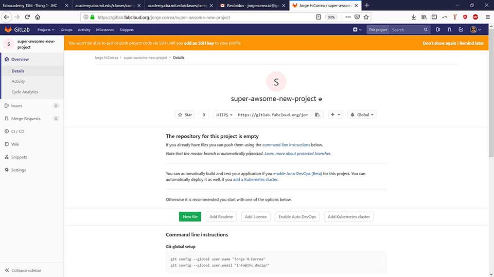

Jan 23: project management
Assignment List
- Build a personal site describing you and your final project. ☑
- Using the default MK template
- Switching into HTML5
- Issues With the html5 Template
- Upload an image & reducing size
- Additional Finds
- Upload html to the class archive. ☑
- Discus other protocols ☑
- Work through a git tutorial. ☑
- Reading and informed option about Mercurial
- Student Agreement Signature ☑
- Documenting a new created project ☑
- Progress on the Final Project ☑
- Brainstorming
- Thought Recaps
- Project management General Schema ☑
Build a personal site describing you and your final project
- Using the default MK template
-
I modified the provided default website by getting into edit mode as a result of playing around.
It was instantly logical how the text and image filtered into becoming rendered in the browser.
I was intimidated by the lack of knowledge of what the language was. I still modified and fidelled around with the code. That was until I tried to place a link inside it. I sort of modified the Image code:
cause it felt good. However, when I added the next line: >> 
it didn't space well, and a quick search revealed to me I had no idea what to search for in order to find a solution. I quickly gave up and started working on an HTML website. I did work with Html and css before breathy, bit rusty yet I know how to find what I don´t know so i took the html leap. - Switching into HTML5
Writing from scratch in an idealistic bad ass world would be best. Due to lack of practice and time using template is best. Working on the website this week and standardizing the assignment's web page becomes efficient for future practices to reduce time in upcoming weeks.
I used: going for html5up's Editorial
The red goes well with the places color and simplicity in the white background with a sliding out tab on the left is a great choice. Especially if all the assignments are place and could displayed in an orderly fashion all the projects, as seen on geoffroi-garonepaule's site as well as some others.
Correction #1: somebody already has red, I'll change my features to green.
Correction #2: My new picture has red background, I'll change my colour features to a much darker, sober red.
- Issues With the html5 Template
- Solution: I just started with the original template again, and did not brake the code.
- Uploading the web page to the server
Currently I´m experiencing some problems with the nav bar when the user access the web page though a medium and small screen but I'm ignoring it as everything is still readable in order to finish all the week's assignment instead of searching for the broken div or similar issue.

I mistakenly uploaded the web page outside the folder it was suppose to be uploaded (//jorgecorrea) and not the folder containing the index files (//docs).
I freaked out and manage to change my password or loose it (working theory is that something changed in the git system, and I was not able to access with the initial credentials) or something else.
3-4 hours of time looking around this problem, by myself and continuous discussion with my fab mates. SOLUTION: help from my Instructor creating a Token, I later used to sign in the git.
After this, the upload with git went fairly smooth. Along the way i did pick up on a better understanding of how the git system works and a few commands Ill i hope never to use again.
Anyway, Reading this post is a testament to the success.
Advantage: all commands are engraved in my brain. Never looked up any of em since.
- Upload an image & reducing size
-
Due to past experience, I have worked with reducing image size and format in the past.
I choose a landscape image file I had taken prior to replace the embedded image in the provided mk website.
I used Photoshop, reduced it to 1600 px (width), and 72 res. As a second image editing choice I would have used https://pixlr.com/ as It is free and fairly intuitive.
Reduced it from 12.4 mb to 575 k and uploaded as: cotopaxi hdr
Later replaced the code in the web page's image to cotopaxi hdr.jpg
As part of my research I found out not to be the first person to use the template I´m working on, as Keitaro Bando also has the exact same one. I´ve change my color to green. (update) Jan 28: in class it was revealed 2 other people with the same template. Intresteingly enough it was intresting how each take on the same template becomes diferent.
As I was finishing up it wrongly occured to me that It might be good idea to have everything organized in folder as it was suggested. That is when all the webpage got unstable and some more issues started poping up. No as clean code modification on my part.
This lead to me re-writing my modifications on a clean slate template again.
- Discus other protocols
-
Reading an informed option about Mercurial
- As mercurial was used earlier than Git, some people have grown a preference to it. As I found in In news ycominator Blog.
- As a result I decided to try out git's alternative. Download, and initiated a local file.
- I can see how little real difference between them both. The fact is that most people seem to be useing Git, and as being intedet to collaborate choosing git is the wiser choise.


- The mercurial has much better documentation with a simple google search.
- In my quest of a better understading of what version controll is, I found this version control cartoon
- I found it very usefull to understand what version cotntrol is: "Never ask, is this the latest? again!". by goabstract.com
- It is a company looking to impelment the version cotrol system in design specific coolaborations

- Work through a git tutorial
-
Start at the beginning, Git-scm.com
First we went through a small tutorial with the local instructor about the process of uploading files with git. I became confident enough to attempt to do exactly the same in my pc. As a result I failed in the cloning, and only got into a bigger mess as I attempted to use every command found on-line that might be related.
I re-started, sitting though "the" 4 videos explaining basic concepts about git Official videos by Git.
In the I ended talking about my doubts to my local instructor, and he pointed out many misconceptions, starting with the simple fact that cntrl+v was not an option in Git. Instead Git required a right click > paste. In the end he smoothed out my initial troubles.

- The git's user friendly ability
-
Here are a series of issues i had over the long process of uplading the git.
It is always hard to document for the unexpected, yet always the most valuable.
To shed light on the unexpected, simple bullet points will be attached with each image.

- Getting the grasp that the url is not the same thing as the git repository directory is something to be easly overlooked
- The credentials are simple, yet so simple that one might be expecting a password someplace. Git config-- uses a name and email to modify a rep. Hardly secure. yet for all intensive purposes more the enough. Tokens are the first password equivalent. Ssh are more so, Thinking the purpose is education, and open source token is more than enough.
 s
s
- Watching an episode of git. Other than it its worth discussing about git and watching more than just the videos.


Git Workflow
Step 0 was actually finding a d downloading the git program to the computer. I did not understand what it actually was at first, I know think of it as little elf in th emachine that just executes code. It can run programs just as the machine does or did in the DOS, and now the cmd (windows) the only diference this is linux based.
You can access it Git Download Page
In order to mantain a proper work flow of git environment, I follow this steps:

Git's ssh Key
It is recomended to have the ssh key as part of the git's proper security measures. I have opted not to do so as a result of my feeling of propensity to possibly loose the key and entironly loose access to the repo and pass the class. All the information ill be posting is not highly classified nor will it attract hackers most lightly.
If anything I hope it be used, copied and improved so.
As for the process of creating a ssh key I would follow this steps
The steps are following the "generate a new SSH key pair"
And This Documentation by my classmate Ale Who made a great and consice documentation of how to use the key's.
- 1. Started by creating a private ssh:
ssh-keygen -t rsa -C "info@jhc.design" -b 4096 - 2. Later pressed enter = Saving the key (in txt file) in the default folder (c/users/dell/.ssh), and enter again = Leaving a blank space (no creating a password.. It is recomended to create a password)
- 3. Acordingly found the ssh key as "id_rsa" under: the c/users/dell/.ssh/
- 4. To create a public key I Entered: "xclip -sel clip < ~/.ssh/id_rsa.pub" but had no result back. Aparently I had already attempted to create a public key
- 5. entered: "cat ~/.ssh/id_rsa.pub" and got back the public key:
ssh-rsa AAAAB3NzaC1yc2...iMv4f7AvEuDEY8CeucOQKWg1bYQ== info@jhc.design - 6. After installing with the ssh key you tcan try it by by entering: ssh -T https://gitlab.fabcloud.org/academany/fabacademy/2019/labs/zoi/students/john-dear.git
- 7. If everything is possitive, it wil return: Welcome to GitLab

The ssh key is stored under c/users/dell/.ssh
There will also be a copy of this files under the dropbox folder: C:\Users\DELL\Dropbox\jhc.design\proyectos\jhc.design\Fab Academy
Just in case my pc unexpectedly bursts into flames tomorrow, or the hard dive finally kicks out.
- Student Agreement Signature
-
Click the button to see the signed agreement.

The earlier Lightbox code is creted to w3school tutorial on a href.
- Document a new created Project
-
After the repository, I created a new project at github.

About the final project
- Brainstorming
-
Best option is Iot Furniture
It´s still not sure exactly what will the final project be. I´ll be an desk chair, under the concept that jamming sensors into an object as intimate as work chair form an office will only get interesting results. I found nothing of the sort around, only an intelligent furniture made by Carlo Ratti´s Lift Bit.
Making an espresso shot after I sit down, or creating an announcement every time bad posture is occurring in order to spear some pain might be an interesting outcome to contemplate.
- Thought Recap
A furniture seating experiment, meant to test possibilities and understand what sensors might be viable to create a relationship between an office chair and its users. The work chair is an object that has been constantly in evolution next to the specialization of labor proposed by F. Taylor and is currently an essential part of any office and work environment.
An attempt to manufacture it with modern technology might also be interesting take, to see how far it can be taken. Besides, I have previously designed different types of furniture and as part of a broader career path making and experiment as such will make me understand better the ioT as well as the modern manufacturing methods.
I´ve been exposed to traditional manufacturing in small and medium scale locally and fully understanding what is coming to complement what exists will be beneficial. As a reference I´ll be using "A taxonomy of office chairs" by Jonathan Olivares, but I´m open to other sources. Especially recommended anthropometric data.
.jpg)
Brainstorming possible shapes for a chair.
.jpg)
Project management General Schema
This section will be updated in order to mantain a general summary on academy progress. All in red is my personal plan overview
This was all transformed from a word file list into html using word html
Jan 16: principles and practices, presentations, introductions
Final Project Idea
Jan 23: project management
Create web page / Project Management Plan (this)
Jan 28 recitation: version control
Use Git to upload pages / Talk about other protocol options
Jan 30: computer-aided design
Free cad experimentation / Vector experimentation
Feb 06: computer-controlled cutting
Create a Press-fit cut / vinyl cutting
Feb 11 recitation: projects
Feb 13: electronics production
Sacha Programmer / 2nd programer
Feb 20: 3D scanning and printing
Last Scan & 3d print
Feb 25 recitation: tools
Feb 27: electronics design
My electronic plate / possible input section
Mar 06: computer-controlled machining
Cnc cutting plate /
Mar 11 recitation: design
Mar 13: embedded programming
Receiver plate / sender plate
Mar 20: molding and casting
Seat scale model / possible seat mold 1:1
Mar 25 recitation: machines
Mar 27: input devices
Seat sensing input
Apr 03: output devices
Coffee maker output
Apr 08 recitation: programs
Apr 10: applications and implications
The application of it all
Apr 17: break
Apr 24: networking and communications
Tinkering with Bluetooth
Apr 29 recitation: economy
Apr 30: mechanical design
May 08: interface and application programming
Possible app to determine parameter on device functioning
May 13 recitation: classes
May 15: machine design
May 22: wildcard week
Bio-polymer foam for seat
May 27 recitation: events
May 29: invention, intellectual property, and income
Possible open source ip
Jun 05-19: project development
Develop final project.